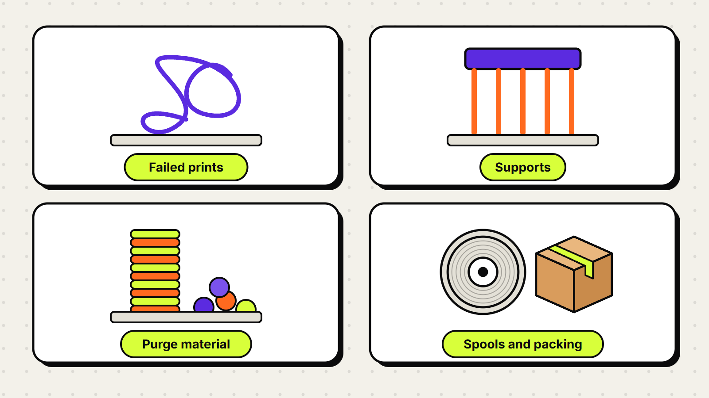
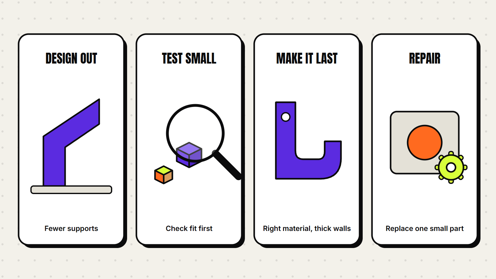

3D printing is often described as a green way to make things. Parts of that claim hold up. Parts do not. The honest answer depends on what you print, how often it fails, how long it lasts, and what it replaces. This guide separates the real benefits from the marketing, and shows how to reduce waste whether you print yourself or order from someone else.

PLA is made from plant sources and is often called biodegradable. That needs a condition: it breaks down mainly in industrial composting facilities, which hold high temperature and humidity. In ordinary soil, a bin, or the sea it lasts a very long time. Many composting sites do not accept it, and such facilities are not available everywhere. Do not drop printed PLA into home compost expecting it to disappear.
Most municipal recycling systems do not take printed parts. They are often unlabelled, mixed in type, and small. Some specialist services and research projects grind scraps back into new filament, but access is limited. If a local scheme exists, sort by material and keep scraps clean, because mixed plastics are hard to reuse.
| Claim | Better reading |
|---|---|
| "PLA composts at home" | Usually needs industrial composting |
| "3D printing has no waste" | Supports, purge, and failures create waste |
| "Recycled filament is always better" | Check quality; a failed print wastes more than it saves |
| "Printed means sustainable" | Only if the part is useful and lasts |
The greenest part is usually the one you do not have to make twice. Choose a material suited to the place, thicken weak points, and print in a strong orientation. A holder that survives years uses far less plastic than a cheap one replaced each season. Our guides to materials and print orientation help with both.

For thousands of identical objects, injection moulding can use less energy and material per piece once the mould exists. For a handful of custom pieces, printing avoids the mould altogether. Neither is always greener. The comparison depends on quantity, as our guide to printing, machining, and moulding explains.
Tip: Ask "Will I still want this in a year?" before ordering a novelty. The answer is the best waste filter there is.
Think of a drawer organiser whose one small divider snapped, or a stool missing a foot cap. Without a spare, the whole item may be thrown away. A printed replacement weighs very little compared with the object it saves. This is where printing makes its strongest environmental case: not by producing more things, but by keeping existing ones working. Our guide to measuring a broken part shows how to ask for one.
The same thinking applies to design. A piece made in separate sections allows one damaged section to be replaced instead of the whole, and screws or pins are easier to take apart than glue.
Plant-based origin is a point in its favour, but the part still needs to last. A PLA part that warps in a warm spot and must be remade wastes more than a longer-lasting material.
Some can serve as practice pieces for sanding, gluing, or painting. Keep scraps sorted by material in case a recycling route appears.
Using only the walls and infill a part needs saves material, as long as it stays strong enough for its job.
It is fair to ask how a studio limits waste. Useful answers are concrete: checking designs before printing, testing difficult fits as small pieces, storing filament dry, orienting parts to cut supports, and advising against extra colours that add little. Vague claims that a material is green tell you much less than these everyday habits.
3D printing can reduce waste when it replaces overproduction, saves a product from being thrown out, or makes a long-lasting custom item. It adds to the problem when it produces failures and things nobody needs. Used thoughtfully, it is a useful tool rather than a cure. If you have something worth repairing, send a photo and measurements through the quote form or our design service.